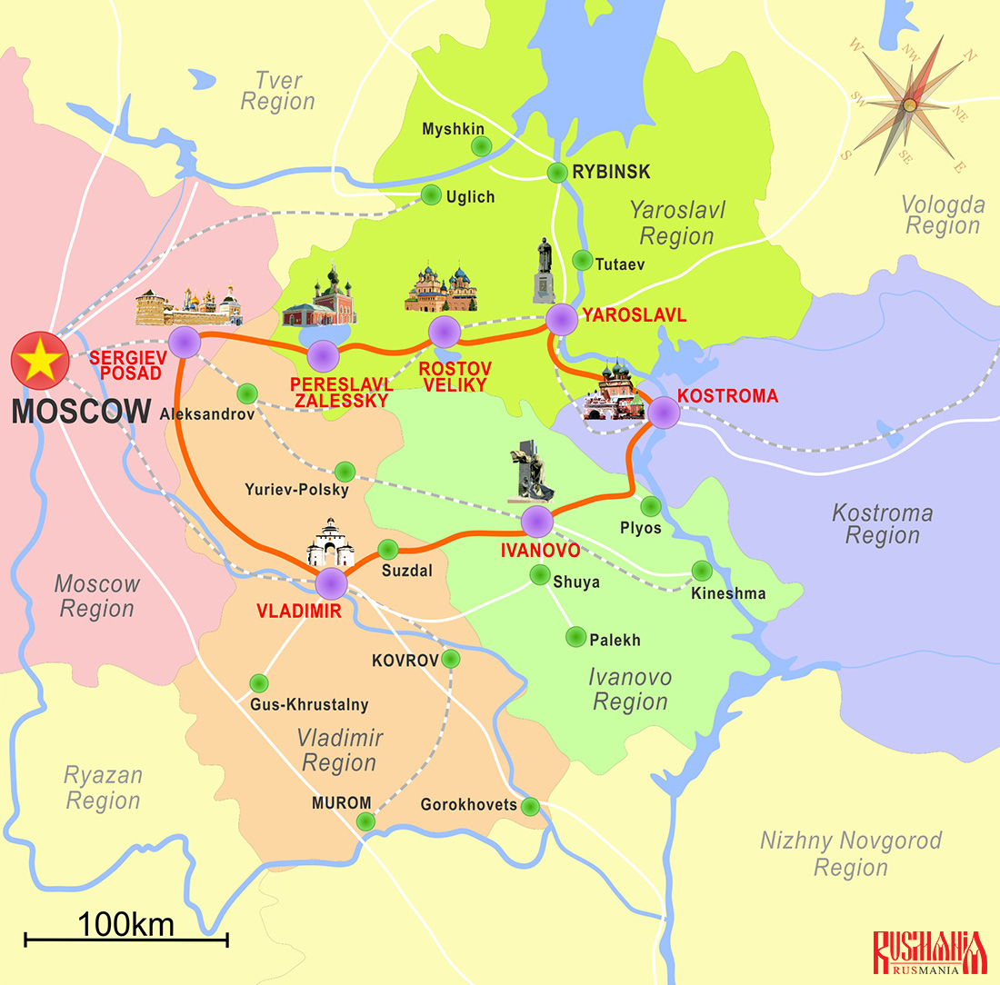
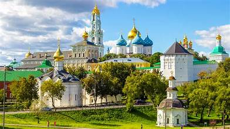
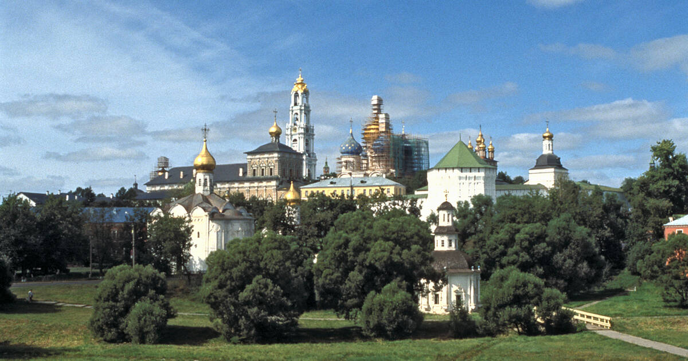
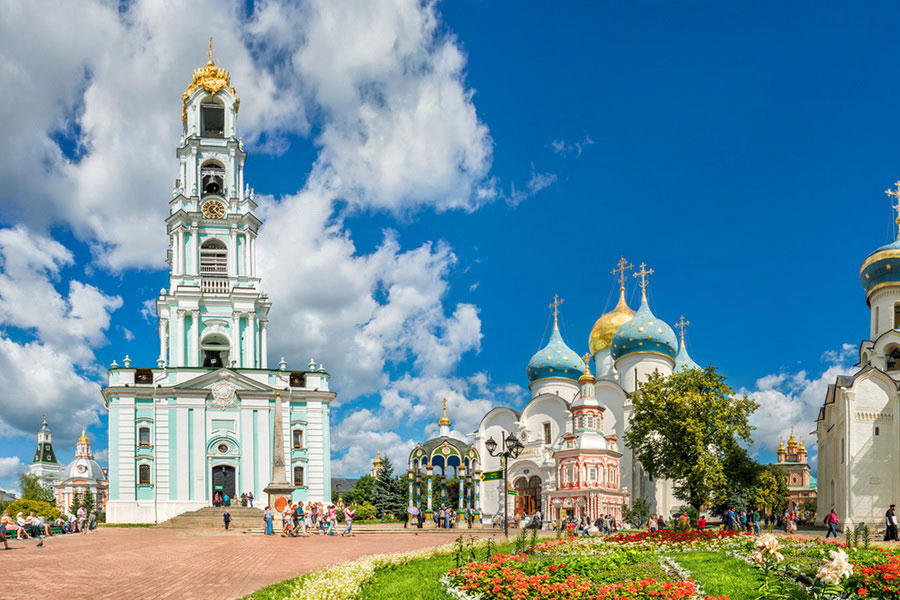

The Golden Ring is a celebrated tourist route that connects a cluster of ancient cities northeast of Moscow, known for their well-preserved medieval architecture and deep cultural heritage. It forms a symbolic circle of Russian history, showcasing the origins of Russian statehood, Orthodox spirituality, and traditional crafts.
The Golden Ring cities trace their origins to the 10th–13th centuries, when they were key centers of early Rus’ principalities. They witnessed the rise of Orthodox Christianity, the Mongol invasion, and the later consolidation of Muscovite power. Many of their churches, kremlins, and monasteries embody the evolution of Russian medieval art and religious life.
The route is renowned for white-stone cathedrals, onion-domed churches, and fortified kremlins set amid rivers and rolling landscapes. Architectural highlights include the Cathedral of the Dormition, the Church of the Intercession on the Nerl, and Yaroslavl’s frescoed monasteries. These landmarks illustrate the development of Russian ecclesiastical design from Romanesque influences to the distinctive Moscow Baroque.
Today, the Golden Ring is among Russia’s most popular cultural itineraries, drawing both domestic and international travelers. It promotes heritage conservation, regional crafts such as enamelwork and icon painting, and traditional Russian cuisine. Many cities have undergone restoration to maintain their authenticity while accommodating modern tourism infrastructure.


